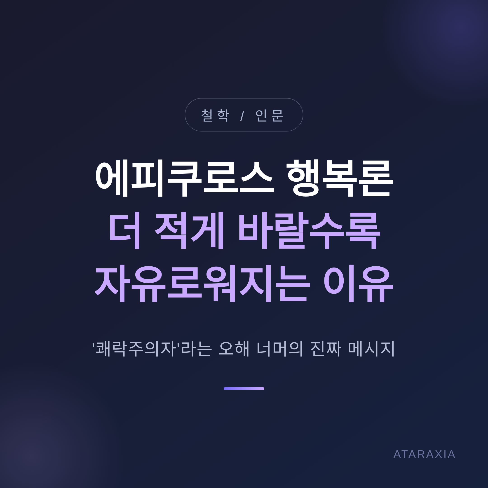
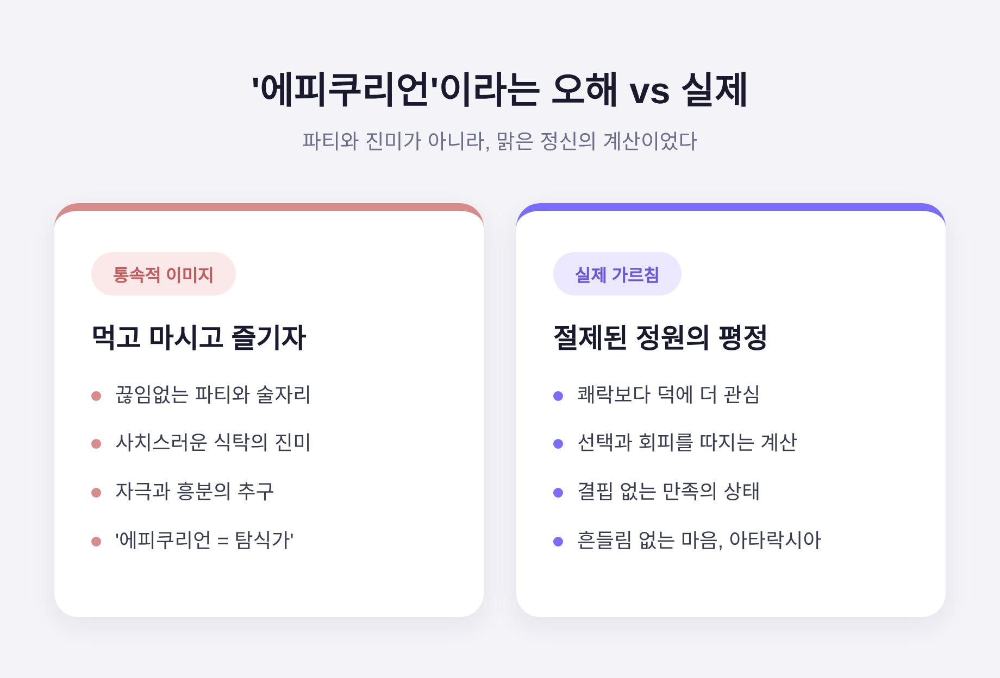
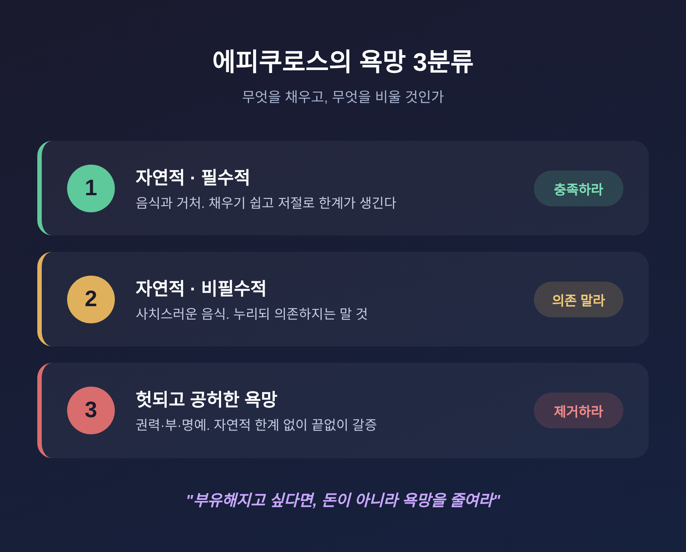

에피쿠로스 행복론, 더 적게 바랄수록 자유로워지는 이유
오늘은 에피쿠로스의 행복론을 정리해 보려 합니다. '쾌락주의자'라는 꼬리표 뒤에 가려진 진짜 메시지를 따라가 봅니다. 결론부터 말씀드리면, 그의 길은 더 많이 갖는 것이 아니라 덜 바라는 것이었습니다.
■ 쾌락주의자라는 오해부터 걷어내기
'에피쿠리언'이라는 말은 흔히 "먹고 마시고 즐기자"는 태도로 통합니다.
하지만 정작 에피쿠로스 본인은 쾌락보다 덕에 더 관심이 많았습니다. 다만 그에게는 덕과 쾌락이 긴밀히 이어져 있었을 뿐입니다.
그는 『메노이케우스에게 보내는 편지』에서 이 오해를 직접 못 박습니다. 즐거운 삶을 만드는 것은 술자리나 끊임없는 파티, 사치스러운 식탁의 진미가 아니라, 모든 선택과 회피의 이유를 따져 묻는 '맑은 정신의 계산'이라는 것입니다.
오해가 굳어진 데는 역사적 배경이 있습니다. 기독교가 부상하면서, 영혼까지 원자로 이루어졌다는 그의 유물론은 신학에 대한 위협으로 여겨졌습니다. 그 적대가 '에피쿠리언 = 탐식가'라는 통념을 강화했습니다. 방대했던 그의 저작이 거의 소실된 것도 이와 무관하지 않습니다.

■ 에피쿠로스가 말한 진짜 쾌락
그가 말한 쾌락은 자극의 흥분이 아니었습니다.
쾌락은 두 종류로 나뉩니다. 하나는 욕망을 채우는 '과정'에서 생기는 동적 쾌락입니다. 배고플 때 음식을 먹는 즐거움이 여기 속합니다. 다른 하나는 욕망이 채워진 '뒤', 더는 결핍이 없는 만족의 상태가 주는 정적 쾌락입니다.
에피쿠로스가 최고로 친 것은 후자였습니다.
이 안정된 상태에는 두 얼굴이 있습니다. 몸으로는 고통이 없는 상태, 곧 '아포니아'입니다. 마음으로는 흔들림이 없는 상태, 곧 '아타락시아'(평정)입니다. 그가 삶의 목적으로 삼은 것이 바로 이 평정이었습니다.
그래서 한 연구자는 이렇게까지 말합니다. 그를 '쾌락주의자'보다 '평정주의자'라 부르는 편이 오해가 덜하다고 말입니다.
■ 욕망을 셋으로 나눈 처방
에피쿠로스는 욕망을 세 종류로 나눕니다.
첫째, 자연적이고 필수적인 욕망입니다. 음식과 거처가 그렇습니다. 채우기 쉽고, 일정 선에서 저절로 한계가 생깁니다. 배가 고파도 일정량만 먹으면 충족됩니다. 이런 욕망은 채우라고 권합니다.
둘째, 자연적이지만 필수적이지 않은 욕망입니다. 음식은 꼭 필요하지만, 굳이 사치스러운 음식이어야 할 필요는 없습니다. 마침 있으면 누리되, 거기에 의존하지는 말라고 합니다. 의존하는 순간 불행이 시작되기 때문입니다.
셋째, 헛되고 공허한 욕망입니다. 권력, 부, 명예가 그렇습니다. 이것들은 자연적 한계가 없습니다. 가질수록 더 원하게 되고, 끝내 채워지지 않습니다. 사회와 거짓 믿음이 심어준 욕망인 셈입니다. 그는 이 욕망은 아예 제거하라고 권합니다.
그의 처방은 한 문장으로 압축됩니다.
"피토클레스를 부유하게 만들고 싶다면, 돈을 더 주지 말고 그의 욕망을 줄여라."

■ 두려움을 다루는 네 가지 약
평정을 깨뜨리는 가장 큰 적은 두려움이었습니다.
에피쿠로스 학파는 이를 '테트라파르마코스', 곧 네 부분으로 된 처방으로 정리했습니다. 원래는 네 성분을 섞은 상처 치료 연고를 가리키던 말을, 마음을 위한 은유로 가져온 것입니다. 네 가르침은 이렇습니다. 신을 두려워하지 말 것, 죽음을 걱정하지 말 것, 좋은 것은 얻기 쉽다는 것, 끔찍한 것은 견디기 쉽다는 것입니다.
신에 대해 그는 이렇게 보았습니다. 신은 존재하지만 인간사에 개입하지 않으며, 벌을 내리지도 않는다는 것입니다.
죽음에 대해서는 더 단호합니다. 정신은 죽으면 흩어지는 원자이므로, "죽음은 우리에게 아무것도 아니다"라고 말합니다. 죽음이 나쁘다면 누구에게 나쁜가를 그는 되묻습니다. 산 자는 아직 죽지 않았고, 죽은 자는 이미 존재하지 않습니다. 그러니 어느 쪽에게도 해가 되지 않는다는 논증입니다.
루크레티우스가 전한 또 다른 논증도 있습니다. 태어나기 전의 무한한 비존재를 우리는 두려워하지 않습니다. 그렇다면 죽은 뒤의 비존재도 두려워할 이유가 없다는 것입니다.
■ 덕과 우정은 무엇을 위한 것이었나
에피쿠로스에게 덕은 그 자체가 목적이 아니었습니다.
용기와 절제 같은 덕은 모두 행복에 이르기 위한 도구였습니다. 행복을 덕과 같다고 본 스토아 학파, 행복을 유덕한 활동으로 본 아리스토텔레스와 갈리는 지점입니다.
우정도 마찬가지입니다. 다만 그는 우정을 대단히 높이 평가했습니다. 우정이 "세상을 돌며 춤추며" 우리에게 깨어나라 말한다고 표현할 정도였습니다. 친구 없는 삶은 고독하고 위험하다는 것입니다.
정의 역시 도구였습니다. 그는 정의를 "서로 해치지도 해를 입지도 않겠다는 합의"로 보았습니다. 덕도 우정도 정의도, 끝내는 평정을 위한 것이었습니다.
■ 오늘 우리에게 남는 의미
에피쿠로스의 말은 지금 더 또렷하게 들립니다.
즉각적 만족과 소비주의가 지배하는 시대이기 때문입니다. 불필요한 욕망을 줄이라는 그의 강조점은 오늘날 미니멀리즘이나 마음챙김과 맞닿아 있습니다.
다만 한 가지는 분명히 해 둘 만합니다. 그의 목표는 '결핍을 추구하는 삶'이 아니었습니다. 자연이 쉽게 내어주는 쾌락을 충분히 누리되, 채워지지 않는 헛된 욕망에서 벗어나는 삶이었습니다.
정리하면 이렇습니다. 행복은 더 많이 채워서가 아니라, 덜 바람으로써 가까워집니다.
"부유해지고 싶다면 욕망을 줄여라."
더 적게 바랄수록 더 자유로워진다는 말이 역설처럼 들리신다면, 한 번쯤 가진 욕망의 목록을 헤아려 보시길 권합니다.